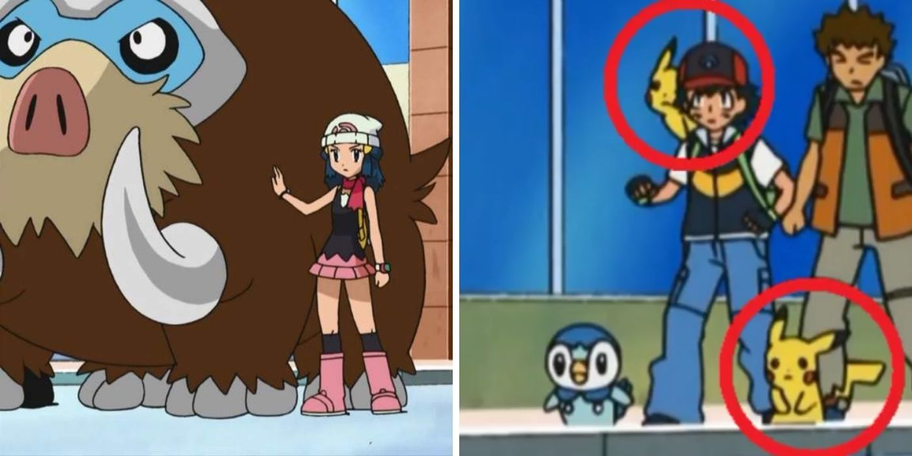
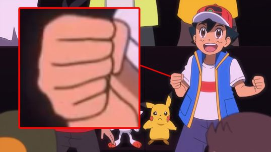
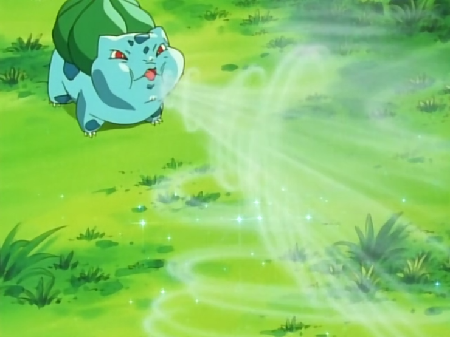
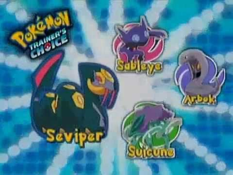

Anime
Dicen que una imagen dice mas que mil palabras. Y yo digo que estas imagenes explican a los encargados del anime de Pokemon.

En esta escena claramente se puede ver que el clon malvado de pikachu volvio.

Este es el resultado de cancelar la evolucion de golbat a la mitad, un crobat azul.

Alguien no sabe dibujar manos. Y alguien mucho mas idiota no se dio cuenta de que le dibujaron 6 dedos

Bulbasaur no aprende remolino.

En esta escena de corte de uno de los episodios de la tercera generacion se insinua que Seviper es la evolucion de arbok.